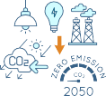
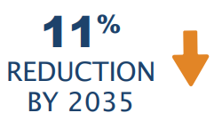
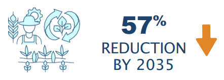

October 2025
Cover Image
The paopao "canoe" represents Samoa's continuing traditional voyage to the world in Samoa's fight to keep the 1.5 degrees Celcius limit alive.
Image Credits
Ministry of Natural Resources and Environment [MNRE] Samoa
Disclaimer
All information provided in this document, including the document itself, belongs to the Government of Samoa.
SAMOA’S THIRD NATIONALLY DETERMINED CONTRIBUTION
IMPLEMENTING PARTNER
SPECIAL THANKS
FOREWORD
Samoa stands at the frontline of the global climate crisis. Our islands, rich in culture, biodiversity, and resilience are also among the most vulnerable to the impacts of a warming planet. Rising sea levels, intensifying cyclones, and shifting rainfall patterns are not projections for the distant future; they are the loved realities of our people today. Yet, even in the face of these challenges, Samoa chooses to lead with hope, action, and conviction.
The submission of Samoa’s Third Nationally Determined Contribution (NDC 3.0) under the Paris Agreement represents our continued commitment to global climate ambition. It reflects our collective resolve to safeguard our people, ecosystems, and the generations who will inherit this land and ocean. Though our contribution to global greenhouse gas emissions is negligible, our responsibility as stewards of the Pacific is profound.
NDC 3.0 is the product of an extensive, whole-of-country process—rooted in the wisdom of our communities, the technical expertise of our stakeholders and partners, and a shared national vision of a sustainable Samoa as articulated in the Pathway for the Development of Samoa (PDS) 2021/22 – 2025/26. Aligned with the National Climate Change Policy 2020–2030 this NDC 3.0 brings together adaptation, mitigation, and loss and damage in a unified practical and ambitious framework.
Our commitments, to reduce national emissions by 104.11 Gg CO2e by 2035, to expand our forest and mangrove cover, to strengthen food security, and to mainstream gender equality, are anchored in a clear belief: that climate action and sustainable development are inseparable. In short ‘a resilient Samoa is a prosperous Samoa’.
This NDC also reinforces the principle of common but differentiated responsibilities. Our ambition is conditional on access to adequate international finance, technology transfer, and capacity-building. We call upon our development partners to transform pledges into action. For small island nations, predictable and sustained climate finance is not simply a development need — it is a matter of survival.
NDC 3.0 is also a call for global solidarity. The 1.5°C threshold is not a statistic for Samoa; it is our lifeline. Every fraction of a degree of warming threatens our coral reefs, our food systems, and the very fabric of our island communities. But we refuse to be defined by vulnerability alone. Samoa will continue to champion solutions, share lessons from community-based resilience initiatives, and uphold the values of fa’a Samoa i.e. respect, cooperation, and guardianship of our environment.
As we present Samoa’s NDC 3.0 to the world, we reaffirm our belief that climate action must be driven by courage, equity, and partnership. Together, we can still shape a future where no nation, large or small, is left behind.
Honourable La’aulialemalietoa Leuatea Polataivao Fosi Schmidt
Prime Minister of the Government of Samoa
ACKNOWLEDGMENTS
The Government of Samoa extends its sincere appreciation to all those who contributed to the development of Samoa’s Third Nationally Determined Contribution (NDC 3.0). This document reflects a collective national effort to advance climate ambition, resilience, and sustainable development, guided by the participation and commitment of government ministries and agencies, village councils and communities, civil society organizations, the private sector, and academic institutions.
The Government of Samoa gratefully acknowledges the UN-wide support provided under the technical leadership of the United Nations Development Programme (UNDP) through the Climate Promise initiative, which offered financial, coordination, and advisory assistance for the preparation of Samoa’s Third Nationally Determined Contribution (NDC 3.0).
The Government of Samoa also acknowledges with deep appreciation the Global Green Growth Institute (GGGI) and the NDC Partnership for their valuable technical support throughout the process. Their expertise and policy advice have been central to shaping an NDC that is both ambitious and achievable.
We also thank UNDP’s contracted consultancy firm, Grant Thornton Bharat LLP, for providing technical and analytical support in the preparation of Samoa’s NDC 3.0.
Special recognition is extended to the Ministry of Natural Resources and Environment (MNRE) for leading the coordination of this process, and to all collaborating government ministries and agencies. Their active engagement and technical inputs were essential in defining Samoa’s climate priorities and sectoral targets.
Samoa’s NDC 3.0 stands as a testament to our enduring partnerships, national ownership, and shared vision for a resilient and sustainable future.
LIST OF ABBREVIATIONS
ADB |
Asian Development Bank |
AFOLU |
Agriculture, Forestry and Other Land Use |
AFS |
Afulilo Floating Solar |
BAU |
Business-As-Usual |
BESS |
Battery Energy Storage System |
CAGR |
Compound Annual Growth Rate |
CO₂e |
Carbon Dioxide Equivalent |
CUF |
Capacity Utilization Factor |
EPC |
Electric Power Company |
EV |
Electric Vehicle |
Gg |
Giga grams |
GHG |
Greenhouse Gas |
GWP |
Global Warming Potential |
IPP |
Independent Power Producer |
kW |
kilowatt |
LEDS |
Low Emissions Development Strategy |
MJ |
Megajoules |
MNRE |
Ministry of Natural Resources and Environment |
MRV |
Monitoring, Reporting, and Verification |
MU |
Million Units (of electricity) |
MWh |
Megawatt-hour |
NCV |
Net Calorific Value |
NDC |
Nationally Determined Contribution |
NECC |
National Energy Coordination Committee |
PPA |
Power Purchase Agreement |
PV |
Photovoltaic |
RE |
Renewable Energy |
SDGs |
Sustainable Development Goals |
SEGR |
Specific Energy Generation Ratio |
SFS |
Solar Farm Site |
SRWMA |
Samoa Recycling and Waste Management Association |
tCO2e |
Tonnes of Carbon Dioxide Equivalent |
tpa |
Tonnes Per Annum |
WtE |
Waste to Energy |
Samoa is a volcanic archipelago located in the Central South Pacific, comprising two main islands (Savai’i and Upolu) and eight smaller islands. Owing to its geographic location, and its status as a Small Island Developing State (SIDS) in the Pacific, Samoa is extremely vulnerable to climate change impacts. The country is heavily reliant on its natural resources for the main economic sectors of agriculture, fisheries and tourism.
Samoa faces existential threats from sea level rise, coastal erosion, and increasingly severe tropical cyclones. These hazards directly endanger the country’s ecosystems, infrastructure, food security, and the livelihoods of its people. Samoa has experienced a sea-level rise of approximately 4 mm per year since the early 1990s, with projections suggesting an increase of 5–15 cm by 2030 and up to 59 cm by 2090. This rise, combined with storm surges and tides, causes coastal erosion, saltwater intrusion into aquifers, and displacement of communities1 Samoa has warmed by approximately 0.6°C between 1980 and 2018, with future projections indicating a rise of up to 2.7°C under high emissions scenarios by the year 2100. Rainfall patterns are becoming more erratic, with longer dry spells and more intense wet seasons2.
Samoa’s Third National Communication (TNC) to the United Nations Framework Convention Climate Change (UNFCCC) published in 2023 states that the gross GHG emissions in 2020 was 496.33 Gg carbon dioxide equivalent (CO2e). The energy sector accounted for 46% of the total emissions, followed by 28% from the agriculture forestry and other land use (AFOLU) sector, 21% from waste sector and remaining 5% the industrial processes and product use (IPPU) sector. In 2020, the total GHG removals from forests in Samoa amounted to 850.57 Gg CO2e. In terms of gases, carbon dioxide accounted for 46% of all emissions and methane accounted for another 46%, with the remaining being contributed by nitrous oxide and hydrofluorocarbons3.
As a leader in climate action and committing to the urgency of the Paris Agreement, Samoa has developed its NDC 3.0 undertaking an inclusive stakeholder engagement process with key national stakeholders, ministries, departments, and community members with the technical assistance and support of the Regional Pacific NDC Hub and the United Nations Development Programme (UNDP), in collaboration with the strategic advisory firm Grant Thornton Bharat LLP.
Considering its negligible contribution to global GHG emissions and limited resources, Samoa’s
NDC 3.0 is ambitious and reflects the urgency of the Paris Agreement.
MITIGATION
This economy-wide emissions reduction target comprises the following sector-specific mitigation targets:
» Energy - reduce GHG emissions in the energy sector by 11% in 2035 compared to 2020 levels or by 25.68 Gg CO2e
The energy sector includes electricity, transport, energy used in manufacturing and construction, and other energy (commercial and residential) subsectors. To arrive at each subsector target, the business-as-usual emissions were projected till 2035. Implementable mitigation measures were identified considering national circumstances. The mitigation potential of these measures was estimated and the emissions in 2035 post implementation of mitigation measures were estimated. Based on this estimate a subsector was absolute emission reduction target was finalized.
Electricity: 22.65 Gg CO2e below 2020 level
Transport (land and Marine): 2.68 Gg CO2e below 2020 level
Manufacturing, construction and energy others: 0.35 Gg CO2e below 2020 level
» AFOLU - reduce GHG emissions in the AFOLU sector by 57% in 2035 compared to 2020 levels or by 78.43 Gg CO2e.
» Waste - GHG emissions from waste sector will be maintained at 2020 levels by 2035.
Samoa’s National Climate Change Policy 2020–2030 established a comprehensive framework to guide both national adaptation and mitigation efforts, adopting a whole-of-country approach to strengthen resilience against climate change impacts. The policy emphasizes inclusive participation, ensuring that all sectors and communities are engaged in climate action. At the grassroots level, Samoa has produced Community Integrated Management (CIM) Plans, which enable each of the 368 villages to identify and prioritize locally relevant climate adaptation measures. These CIM Plans are designed to enhance community resilience by addressing specific vulnerabilities and leveraging local knowledge. This approach builds on the successful implementation of Samoa’s National Adaptation Programme of Action (NAPA) in 2005, which laid the foundation for coordinated climate adaptation. In addition, in 2023, Samoa implemented the country’s first Gender and Environment Survey, which generated official statistics on numerous adaptation-related issues. The survey provided important information about differentiated behaviors undertaking by women and men to advance adaptation, as well as differentiated impacts from climate change. As such, it will be an essential tool to assess the success of future adaptation strategies. Through these integrated strategies, Samoa continues to demonstrate leadership in climate resilience and sustainable development.
Building on current adaptation actions, Samoa identifies the following quantitative targets that contribute to adaptation in the marine and AFOLU sectors:
» Marine – expand the area of mangrove forests in Samoa by 5% by 2035 relative to 2022.
» AFOLU – manage forests sustainably and increase total forest cover by 1.6% by 2035 relative to 2022.
» AFOLU – increasing Central Savaii Rainforest protected area from 13.3% to 50% by 2035
» AFOLU – developing and distributing at least 3 climate-resilient crop varieties by 2035.
» AFOLU – expanding community-based aquaculture and fisheries management from current 39% to 60% of the 310 coastal villages in Samoa by 2035.
It is expected that these adaptation targets will also contribute to GHG mitigation as well.
Climate-induced disasters pose a persistent threat to Samoa, and the country has taken proactive measures to address both the economic and non-economic dimensions of loss and damage. Through regional collaboration, targeted national initiatives, and engagement with emerging global financing mechanisms, Samoa is building institutional capacity and resilience to confront the realities of climate change. Samoa has identified the following non- quantifiable targets that support in dealing with climate induced loss and damage.
» Data and Information: Improvements in climate change related loss and damage data collection (where possible in a gender-differentiated manner), analysis, monitoring, and observation systems, including utilizing existing sources such as Samoa’s National Survey on Gender and the Environment.
» Anticipated Research: Document anticipated research needs and gaps on loss and damage. The gaps can refer to missing knowledge at the level of climate change impacts on biophysical systems and socio-economic systems, and the interactions between these two types of systems.
» Institutional setup: Review the suitability of existing institutions, the possibility for expanding their functions and mandate, where applicable; or if required, set up new institutions or divisions at the national and subnational levels for addressing loss and damage.
» Policy development and integration: Developing a stand along loss and damage policy or building on existing climate change policies and strategies, to develop new and/or revised policies to take loss and damage into account.
» Loss and Damage finance: Articulate the scale of loss and damage finance needs.
GENDER AND SOCIAL INCLUSION
Gender-differentiated impacts arise across sectors due to varying social roles, access to resources, and exposure to risks between men and women. For instance, official data indicates that the physical and mental health of Samoa’s women is disproportionately affected by climate change. Women are also more likely than men to have to reduce their food intake in favour of feeding other household members, as a result of climate change. Further, women’s participation in consultations on climate change management is low even though many women participate in marine and fishery management groups. Samoa recognizes the gender differentiated impacts and acknowledges the need to ensure inclusive development. For the country to make credible progress in tackling the impacts of climate change it is necessary to have an inclusive approach covering all genders, the youth and other marginalized communities. Samoa identifies the following quantifiable targets for gender and social inclusion:
» 50% women and 40% youth in consultations
» 50% of the participants in climate change related capacity building programmes and consultations are women
» 50% of the beneficiaries of climate change related projects are women
The NDC 3.0 targets are conditional on external financial support.
Samoa is a volcanic archipelago located in the Central South Pacific, comprising two main islands (Savai’i and Upolu) & eight smaller islands. The total land area is 2,831.7 km², with an Exclusive Economic Zone of 120,000 km², smallest in the Pacific. Terrain is rugged & mountainous, with peaks reaching 1,860 meter on Savai’i.
The climate is tropical, characterized by high humidity and consistent temperatures ranging from 24°C to 32°C. Samoa experiences two distinct seasons: a hot, wet season (November–April) and a cooler, dry season (May–October). Rainfall varies between 3,000 and 6,000 mm annually, influenced by the South Pacific Convergence Zone and the El Niño Southern Oscillation (ENSO). Climate trends show a 0.59°C increase in mean temperature and a 49.28 mm decrease in precipitation over the past century. Sea-level rise near Samoa is approximately 4 mm/year, exceeding the global average.
As of 2021, Samoa’s population stood at 205,557 with 78% residing on Upolu and 22% on Savai’i. The population has grown by 4.9% since 2016, though annual growth remains below 1% due to high emigration. The median age is 22 years, indicating a youthful demographic. Samoa is a parliamentary democracy with 51 seats, 10% of which are reserved for women4.
The economy is recovering from the impacts of the COVID-19 pandemic and the 2019 measles outbreak. In 2024, GDP reached WST$3.57 billion (nominal), with an 8.8% growth rate. Key sectors include commerce, construction, agriculture, tourism, and transport. Agriculture contributes 8.1% to GDP, with 94% of households engaged in farming. Fisheries contribute 1.6% to GDP, though household participation has declined by 75% over 30 years. In Samoa, remittances form a major part of household income and GDP. In 2023, remittances formed 28.36% of Samoa’s GDP5.
Samoa faces significant climate risks typical of Small Island Developing States (SIDS), including frequent tropical cyclones, droughts, flooding, and sea-level rise. With around 70% of the population and much of the infrastructure located in low-lying coastal areas, the country’s exposure to these hazards is especially high. Critical ecosystems such as coral reefs, forests, and wetlands are increasingly threatened by the combined impacts of climate change, invasive species, and unsustainable land use. The degradation of these vital resources not only undermines biodiversity but also increases the vulnerability of communities that rely on them for livelihoods, coastal protection, and food security.
Samoa’s biodiversity is both remarkable and highly vulnerable. The nation is home to 991 marine fish species and boasts a unique flora, with 34% of native plants found nowhere else in the world. However, this rich biodiversity is at risk due to ongoing deforestation, land conversion, and the degradation of natural habitats. Forest cover has declined steadily, while coastal erosion and ocean acidification continue to undermine both livelihoods and ecosystem health. Samoa’s vulnerability is further compounded by limited adaptive capacity, which is primarily a result of financial constraints and a heavy dependence on climate-sensitive sectors such as agriculture and tourism. Addressing these challenges requires sustained investment, robust policy measures, and strong community engagement to build long-term resilience.
As a SIDS with a limited resource base, narrow economic structure, & high vulnerability to climate impacts, this updated NDC reflects an ambitious yet feasible commitment to tackle the impacts of climate change. These commitments are guided by key national frameworks such as Samoa Climate Change Policy 2020–2030, the Pathway for the Development of Samoa (PDS), Strategy for the Development of Samoa (SDS) which together ensure coherence across sectors & support transformational climate action.
In 2020, Samoa’s total GHG emissions were approximately ~496 Gg of CO2 equivalent. The sectoral breakdown was Energy 230.17 Gg CO2e, AFOLU 137.76 Gg CO2e, Waste 104.53 Gg CO2e and IPPU 24.53 Gg CO2e. The total GHG removals from forests in Samoa amounted to 850.57 Gg CO2e6.
The Energy sector is the largest contributor, primarily due to road transport and electricity generation. The AFOLU sector emissions are dominated by enteric fermentation and manure management. Since energy and AFOLU are the major contributors, the NDC focuses on the emission reduction potential in these sectors.
Samoa did not develop a GHG emissions reduction target for the industrial processes and product use (IPPU) sector because GHG emissions from IPPU represent only a small fraction (less than 5%) of Samoa’s total GHG emissions, given the absence of mineral, chemical, metal, electronics, and other manufacturing industries as well as the limited use of lubricants, paraffin waxes, and solvents. Moreover, there is a lack of data on emissions from the IPPU sector.
Samoa wishes to communicate the following targets for reducing GHG emissions in the energy, and AFOLU sectors, detailed in Table 1.
Table 1: Samoa’s NDC 3.0 Mitigation Targets
SECTOR - ENERGY |
||
|
Reduce GHG emissions in the energy sector by 11 per-cent in 2035 compared to 2020 levels or by 25.68 Gg CO2e |
||
SUBSECTOR & TARGET |
MEANS |
REQUIREMENTS |
|
ELECTRICITY Reduce GHG emissions in electricity subsector by 22.65 Gg CO2e by 2035 |
Implement RE (Solar PV) projects to reach 75 percent RE integration by 2035 |
Samoa will need external financial support to reach its renewable electricity target |
|
LAND TRANSPORT Reduce GHG emissions in transport subsector (land and marine transport) by 2.68 Gg CO2e by 2035 |
» 15 percent of all registered vehicles are electric vehicles by 2035. » 25 percent of all registered rental and private cars are hybrid vehicles by 2035 |
Samoa requires external financial support and technical assistance to support electrification of vehicles |
|
MARINE TRANSPORT Reduce GHG emissions in transport subsector (land and marine transport) by 2.68 Gg CO2e by 2035 |
» Shore side electricity supply is provided for at berth vessels » 20 percent of all vessels are electrified or powered by onboard solar PV systems by 2035 » 15 percent improvement in energy efficiency of energy use in manufacturing, construction, commercial and residential subsectors by 2035 |
» Samoa can develop shore side electricity supply for at-berth vessels without external financial support. » Samoa requires external financial support to introduce solar PV systems on vessels. » Samoa requires external financial support and technical assistance to support projects for low-carbon maritime transport options |
cont'd Table 1: Samoa’s NDC 3.0 Mitigation Targets
SECTOR - ENERGY |
||
|
Reduce GHG emissions in the energy sector by 11 per-cent in 2035 compared to 2020 levels or by 25.68 Gg CO2e |
||
SUBSECTOR & TARGET |
MEANS |
REQUIREMENTS |
|
MANUFACTURING, CONSTRUCTION AND OTHER SECTORS (COMMERCIAL AND RESIDENTIAL) Reduce GHG emissions in manufacturing, construction and energy others subsector by 0.35 Gg CO2e by 2035 |
15% improvement in energy efficiency of energy use in manufacturing, construction, commercial and residential subsectors by 2035 |
Samoa can ensure energy efficiency improvement in manufacturing, construction, commercial and residential subsectors without external financial support |
SECTOR - AFOLU |
||
|
Reduce GHG emissions in the AFOLU sector by 55 percent in 2035 compared to 2020 levels or by 75.7 Gg CO2e |
||
SUBSECTOR & TARGET |
MEANS |
REQUIREMENTS |
|
FORESTRY Reduce GHG emissions in electricity subsector by 22.65 Gg CO2e by 2035 |
Reforestation, and forest restoration |
Samoa requires external financial support to improve support reforestation and forest restoration. |
Samoa has set a target to reduce GHG emissions in the energy sector by 11 percent in 2035 compared to 2020 levels or by 25.68 Gg CO2e.


ELECTRICITY
Overview of measures and requirements to achieve targets
The electricity subsector has a target of 22.65 Gg CO2e reduction by 2035 compared to 2020 levels. This can be achieved through 75 percent RE integration into the grid. Samoa during the Second NDC period has taken necessary steps to study the grid stability requirements for achieving 80 percent to 90 percent RE integration. Samoa has identified projects to achieve 70 percent RE integration by 2031. However, further projects will need to be identified to meet the 75 percent RE by 2035 target. Samoa will require external financial support to achieve this goal.
TRANSPORT
Samoa has taken a target to reduce 2.68 Gg CO2e emissions from transport subsector by 2035 compared to 2020 levels.
Overview of measures and requirements to achieve targets
Land Transport
Samoa can reduce GHG emissions from transport sector through electrification of its existing fleet. Transport sector decarbonization strategy has been developed and country is seeing growing trend of electric vehicle (EV) and hybrid vehicle adoption. To meet its target of 15% EV and 25% hybrid vehicles (rentals and personal vehicles) by 2035, Samoa will require technical assistance support in renewable energy charging infrastructure and necessary incentives and regulations for promoting electric and hybrid vehicles. External financial support will be required to provide such incentives and meet the NDC target.
Marine Transport
Emission reduction in the marine transport sector can be achieved through electrification of vessels. For electrified vessels, shore-side electricity infrastructure will be required. Development of shore-side electricity supply can be achieved without external financial support. For retrofitting smaller vessels with onboard solar PV and battery system, will require technology transfer, capacity building, and external financial support.
ENERGY USE IN MANUFACTURING, CONSTRUCTION AND OTHER ENERGY SUBSECTORS (COMMERCIAL AND RESIDENTIAL)
Reducing GHG emissions in the tourism sector may be achieved by implementing and monitoring energy efficiency programs for industries and appliances. The successful adoption of energy efficient technologies and appliances are expected to be funded by long-term electricity cost savings.
Samoa has set a target to reduce GHG emissions in the AFOLU sector by 57 percent in 2035 compared to 2020 levels or by 78.42 Gg CO2e.

Overview of measures and requirements to achieve targets
Reducing GHG emissions in the AFOLU sector can be achieved by forest reforestation and restoration. Reforestation and forest restoration will require considerable technical expertise and external financial support. At the national level the interest of the people and various stakeholders is required to determine the availability of land areas that can be used for forest restoration and reforestation that will be monitored by the designated entity.
Samoa recognizes that climate change will have significant impacts on the country, particularly in sectors including electricity, agriculture and fisheries, biodiversity and mangrove forestry, and transport. These sectors and priority areas are clearly highlighted within the Community Integrated Management (CIM) Plans and National Climate Change Policy 2020-2030. The targets, measures and requirements for adaptation are presented in this section.
Samoa wishes to communicate the following quantitative targets for adapting to climate change in the marine and AFOLU sectors, as detailed in Table 2.
Table 2: Samoa’s NDC 3.0 Adaptation Target
SECTOR - MARINE |
||
TARGET |
MEANS |
CONDITIONALITY |
Expand the area of mangrove forests in Samoa by 5% by 2035 relative to 20227 |
Mangrove restoration and planting programs in coastal areas |
Conditional to external funding and technical support |
SECTOR - AFOLU |
||
TARGET |
MEANS |
CONDITIONALITY |
|
Manage the use of forest sustainably and increase total forest cover by 1.6% by 2035 compared to 20228 |
Consolidate CFP (community forestry program) and rehabilitation activities in national parks, reserves and watershed areas for reforestation and forest restoration supported by incentive payments |
Conditional to external funding and technical support |
Increase Central Savaii Rainforest protected area from 13.3% to 50% by 2035 |
Develop required policy and regulations for increasing protected area. |
Conditional to external funding and technical support. |
|
Develop and distribute at least 3 climate-resilient crop varieties adapted to Samoa’s agro-ecological zones by 2035 |
Design a program to develop and distribute at least 5 climate-resilient crop varieties |
Conditional to external funding and technical support |
|
Expand community-based aquaculture and fisheries management from current 39% to 60% of the 310 coastal villages in Samoa by 2035 |
Design a program to expand community-based aquaculture and fisheries management |
Conditional to external funding and technical support |
It is expected that these adaptation targets will also contribute to GHG mitigation.9
MANGROVE FOREST
Target
Samoa has set the target of expanding the area of mangrove forests by 5% by 2035 relative to 2020. Expanding the area of mangrove forest will help to protect coastal areas and communities against coastal flooding, coastal erosion, king tides and storm surges. It will also provide valuable habitat for fish, help to protect marine ecosystems, and enhance overall ecosystem services.
Overview of measures and requirements to achieve target
Expansion of the area under mangrove forests may be achieved through a large-scale program to plant and restore mangrove forests. The success of mangrove restoration and planting will require technical expertise, external financial support, and consent from various stakeholders (including coastal villages) to determine the areas on which mangroves will be planted and how mangroves will be planted and monitored.
FORESTRY
Target
Samoa aims to manage forests sustainably and increase total forest cover by 1.6% by 2035 relative to 2022 and increase Central Savaii Rainforest protected area from 13.3% to 50% by 203510. Managing forests responsibly and promoting afforestation and reforestation of degraded forests is expected to moderate stream flow (reducing the risk of riverine flooding and drought), protect native species, preserve cultural values, and maintain the supply of non-timber forest products.
Overview of measures and requirements to achieve target
It is expected that Samoa can manage forests sustainably gradually and increase total forest cover by enhance/strengthened existing programs for reforestation and forest restoration. Samoa would require external financial support and technical assistance to develop this program. The expansion of forest area would also require consent from various stakeholders in order to determine the areas on which forest will be planted and who will be responsible for planting and monitoring these areas.
AGRICULTURE AND FISHERIES
Target
Samoa aims to ensure adoption of climate resilient production system by 30 percent commercial and community-based farms, develop and distribute at least 3 climate-resilient crop varieties adapted to Samoa’s agro-ecological zones, expand community-based aquaculture or fisheries management to 60 percent of the 310 coastal villages , establish and operationalize at least 3 national fisheries service hubs equipped with either refueling, ice storage, or/and boat maintenance facilities to support local and commercial fishing operations, establish a national integrated data platform for agriculture and fisheries and develop and operationalize a centralized MRV Portal to track climate adaptation progress, inform policy, and ensure transparency in sector development by 2035.
Overview of measures and requirements to achieve target
It is expected that Samoa will require substantial external financial support and technical assistance to achieve the agriculture and fisheries sector targets. The adoption of climate resilient crop varieties would also require consent from farmers and commercial and community-based farms. Consent of various stakeholders will also be required in order to expand community-based aquaculture and community-based aquaculture and fisheries management.
While a universally accepted definition of Loss and Damage is yet to be established, it is commonly understood as the adverse impacts of climate change-related hazards that go beyond the capacity of mitigation and adaptation. In Samoa, climate-induced loss and damage have become more visible, driven by slow-onset disasters such as sea-level rise, coastal erosion, salinity intrusion, ocean acidification; and extreme weather events such as cyclones, flash floods, heavy rainfall, landslides etc. These impacts result in both economic and non-economic loss and damage.
In response, Samoa has taken proactive and reactive measures from the continuous advocacy works at the global platforms such as the UNFCCC Conference of the Parties meetings and the set-up of Samoa’s Loss and Damage Fund (SLDF). This fund was established to address the urgent imposed impacts of loss and damage and in preparation for the operationalization and disbursement of the Fund for Responding to Loss and Damage (FRLD) to feed this national fund. The SLDF does not fixate on a particular area but is designed to finance both economic and non-economic losses, such as, infrastructure rehabilitation, community relocation, agricultural loss; and other pressing needs, such as mental health, well-being, etc. arising from climatic loss and damage. This NDC 3.0 complements the Samoa Loss and Damage Policy Framework, advancing national action to address loss and damage in line with Samoa’s climate national commitment and to the Paris Agreement. This reinforces Samoa’s determination to build resilience, safeguard livelihoods, and ensure that loss and damage considerations are fully integrated in all planning to implementation processes.
Table 3: Overview of Targets, Measures, and Requirements
SECTOR - LOSS AND DAMAGE
|
TARGET |
MEANS |
CONDITIONALITY |
|
Conduct at least 2 surveys to collect data on economic and non-economic losses |
Improvements in climate change related loss and damage data collection (where possible in a gender-differentiated manner), analysis, monitoring, and observation systems |
Conditional to:
|
|
Identification of research needs and gaps |
Document anticipated research needs and gaps on loss and damage. |
Conditional to:
|
cont'd Table 3: Overview of Targets, Measures, and Requirements
SECTOR - LOSS AND DAMAGE
|
TARGET |
MEANS |
CONDITIONALITY |
|
Conduct 3 capacity building workshops to build knowledge and capacity of using loss and damage assessment tools. |
Build knowledge and capacity of using loss and damage assessment tools particularly in identifying and documenting no-economic loss and damage such as: |
1. Leveraging the technical services of the Warsaw International Mechanism (WIM) and the Santiago Network access the Fund to Respond to Loss and Damage and other existing financial pools. Conditional to: » External financial support to fund capacity building initiatives on the use of loss and damage assessment tools including training and resource development. » Technical assistance to build national capacity in applying these tools particularly for identifying and documenting non- economic loss and damage. |
|
Institutional setup |
Review the suitability of existing institutions, the possibility for expanding their functions and mandate, where applicable; or if required, set up new institutions at the national and subnational levels for addressing L&D. |
Unconditional Activity: » Institutional setup can be. established with or without external financial support. |
|
Loss and Damage policy development |
Ensure the achievement of the objectives of the Loss and Damage Policy Framework through coordinated implementation and monitoring across relevant sectors. |
Conditional to: » External financial support to institutionalize the framework. » Technical assistance to strengthen institutional capacity and implementation. |
|
Loss and damage financing requirement |
Articulate the scale of loss and damage finance needs |
Conditional to: » External financial support to articulate the scale of loss and damage financial needs. » Technical assistance to articulate the scale of loss and damage financial needs. |
Samoa recognizes that the protection of human rights, the promotion of gender equality, and the meaningful participation of communities are essential pillars of its climate ambition and are integral to the design and implementation of its NDC. Samoa, which conducted an official survey on Gender and the Environment in 2023 and produced gender data on numerous climate indicators, recognises the gender differentiated impacts of climate change and acknowledges the need to ensure inclusive development. The 2023 Gender and Environment Survey (GES) offers comprehensive national data on disaster exposure, climate impacts, environment-related livelihoods, and care work, providing readily available evidence to monitor inclusivity targets under this NDC. Samoa has set quantifiable targets for gender and social inclusion.
Table 4: Overview of Targets, Measures, and Requirements
SECTOR - GENDER AND SOCIAL INCLUSION
|
TARGET |
MEANS |
REQUIREMENTS |
CONDITIONALITY |
|
50% women and 40% youth in consultations |
» Ensuring awareness creation about consultations among women and youth. » Maintaining Sex/age-disaggregated attendance » CIM revision logs |
Unconditional, however Samoa can meet the target with support from donor and implementing agencies. |
Conditional |
|
50% of the participants in climate change related capacity building programmes and consultations are women » Ensuring awareness creation about consultations among women and youth. » Maintaining Sex/age-disaggregated attendance |
Unconditional, however Samoa can meet the target with support from donor and implementing agencies. |
Conditional |
|
|
50% of the beneficiaries of climate change related projects are women |
Ensuring gender disaggregated indicators and data collection is incorporated in the project design documents. |
Samoa requires external financial support and technical assistance to meet this target. |
Conditional |
Several key sectoral policies, plans, and strategies were informed in Samoa’s Second NDC. The National Planning Framework under which is the Pathway for the Development of Samoa (PDS)11 for FY2021/22–FY2025/26 serves as the Government of Samoa’s overarching strategic framework for national developments. PDS identifies Key Strategic Areas which serve as guiding pillars for policy formulation, strategic investments, & programmatic interventions aimed at strengthening Samoa’s resilience to climate change, safeguarding its natural environment, & promoting sustainable development.
Other key documents include the Samoa Climate Change Policy 2020, Agriculture & Fisheries Sector Plan 2022–2027, Energy Sector Plan 2023–2028, National Environment Sector Plan 2023- 2027, Community Sector Plan 2025-2028, Circular Economy Policy 2022, Disaster Risk Financing Policy 2022- 2025, Low Emission Development Strategy 2022–2032, Marine Spatial Plan 2024-2034, Samoa Tourism and Climate Change Strategy 2021-2026 , Transport and Infrastructure Sector Plan 2023-2028, National Policy for Gender Equality and Rights of Women and Girls 2021–2031 and the Samoa Ocean Strategy (2020–2030), as well as the National Policy for Gender Equality 2021-2031 (2021) and the Inclusive Governance Policy 2021-2031 (2021). Samoa’s 2023 Gender and Environment Survey also provides essential insights into climate impacts, adaptation and many other environmental areas relevant for the design and implementation of this NDC.
Government of Samoa has led the development of Samoa’s NDC 3.0. Progress towards achieving the targets identified in Samoa’s Second NDC was reviewed and mitigation and adaptation opportunities to contribute to this NDC 3.0 were identified. The work to identify mitigation, adaptation, loss and damage and gender and social inclusion opportunities for Samoa’s NDC 3.0 focused on identifying climate change mitigation and adaptation investment projects, which were informed by data sets, academic studies, policies, strategies, and other reports, as well as consultation workshops and meetings with national stakeholders, including government and non-government organizations, the private sector, and civil society. Dedicated community engagement sessions were organized as part of Samoa NDC 3.0 development in both Upolu and Savaii. Given the focus on identifying climate change mitigation and adaptation investment projects rather than policy or regulatory interventions, there will likely be other opportunities to reduce emissions in Samoa beyond those used to form the targets in this NDC.
The recommendations from the review of Samoa’s Second NDC, project scoping exercise, and stakeholder consultations were integrated into the NDC 3.0 Implementation Roadmap and NDC Investment Plan. The findings were then validated by MNRE and relevant stakeholders through national consultation workshops and meetings. These workshops and meetings were attended by stakeholders from government and private sector. NDC 3.0 was prepared building on these recommendations, and a second validation process was undertaken based on the draft NDC 3.0. The NDC 3.0 content has then been agreed across stakeholders.
Samoa is a SIDS and its GHG emissions are negligible on a global scale. Around 70% of Samoa’s population and infrastructure are located in low-lying coastal areas, making them susceptible to sea-level rise, coastal erosion, and extreme weather events12. Samoa’s economy is heavily reliant on climate-sensitive sectors such as agriculture & fisheries, which continue to face challenges from changing weather patterns, invasive species, & natural disasters13. As of 2018, 21.9% of Samoa’s population lived below the national poverty line in 201814. Poverty rates have fluctuated over the past decade, influenced by events such as Cyclone Evan (2012), Cyclone Gita (2018), and the measles epidemic (2019). The COVID-19 pandemic had a profound impact, particularly on the tourism sector, which contributes significantly to Samoa’s GDP.
In 2023, as many as 99 per cent of people in Samoa had experienced directly the effects of climate change, and most people had experienced 3 or more disasters in the previous 12 months, but the impacts were different for women and men15. Achieving the targets set out in Samoa’s NDC 3.0 will require investment of large proportions of Samoa’s fiscal budget and public service capacity. The country also requires considerable external financial support, capacity building, and technology investment. Accounting for these national circumstances, Samoa considers its NDC to be fair and ambitious.
ANNEXURE A: INFORMATION TO FACILITATE CLARITY, TRANSPARENCY, AND UNDERSTANDING
OF SAMOA’S NDC 3.0
1. Quantifiable information on the reference point (including, as appropriate, a base year)
a. Reference year(s), base year(s), reference period(s) or other starting point(s)
The GHG emissions reduction targets in this NDC are defined for the year 2035 and measured against the base year of 2020. The 2020 base year was chosen to make use of the most recent and comprehensive GHG inventory. Samoa’s 2020 emissions inventory did not include data on marine sector removals, so it was not possible to set a percentage-based target for emissions reductions in this sector. Therefore, Samoa has set an area-based target for mangrove restoration using recent land cover estimates from 2022.
b. Quantifiable information on the reference indicators, their values in the reference year(s), base year(s), reference period(s) or other starting point(s), and, as applicable, in the target year
Total GHG emissions in Samoa in 2020 were 496.33 Gg CO2e, of which the:
» Energy sector contributed 230.17 Gg CO2e
» AFOLU sector contributed 137.76 Gg CO2e
» Waste sector contributed 104.53 Gg CO2e
» IPPU sector contributed 23.87 Gg CO2e
The breakdown of total GHG emissions in Samoa in 2020 is included in Appendix B
c. For strategies, plans and actions referred to in Article 4, paragraph 6, of the Paris Agreement, or policies and measures as components of nationally determined contributions where paragraph 1(b) above is not applicable, Parties to provide other relevant information
Relevant strategies, plans, and actions include:
» Samoa Climate Change Policy 2020,
» Agriculture & Fisheries Sector Plan 2022–2027,
» Energy Sector Plan 2023–2028),
» Low Emission Development Strategy 2022–2032
» Samoa Ocean Strategy (2020–2030),
» National Policy for Gender Equality 2021-2031
» Inclusive Governance Policy 2021-2031
» National Environment Sector Plan 2023-2027
d. Target relative to the reference indicator, expressed numerically, for example in percentage or amount of reduction
Samoa aims to reduce overall GHG emissions by 103.46 Gg CO2e by 2035 compared to the 2020 gross GHG emissions of 496.33 Gg CO2e This economy-wide emissions reduction target comprises the following sector-specific mitigation targets:
» Energy - reduce GHG emissions in the energy sector by 11% in 2035 compared to 2020 levels or by 25.68 Gg CO2e
Electricity: 22.65 Gg CO2e below 2020 level
Transport (land and Marine): 2.68 Gg CO2e below 2020 level
Manufacturing, construction and energy others: 0.35 Gg CO2e below 2020 level
» AFOLU - reduce GHG emissions in the AFOLU sector by 57% in 2035 compared to 2020 levels or by 78.42 Gg CO2e.
» Waste - maintain GHG emissions in Waste sector at 2020 level by 2035.
» Marine - expand the area of mangrove forests in Samoa by 5% by 2035 relative to 2022
» AFOLU - manage forests sustainably and increase total forest cover by 1.6% by 2035 relative to 2022
» AFOLU - increasing Central Savaii Rainforest protected area from 13.3% to 50% by 2035.
» AFOLU - developing and distributing at least 3 climate-resilient crop varieties by 2035.
» AFOLU - expanding community-based aquaculture and fisheries management from current 39% to 60% of the 310 coastal villages in Samoa by 2035
It is expected that these adaptation targets will also contribute to mitigation.
» Conduct at least 2 surveys to collect data on economic and non-economic losses.
» Identify research needs and gaps
» Conduct 3 capacity building workshops to build knowledge and capacity of using loss and damage assessment tools.
» Establishing institutional setup
» Loss and Damage policy development
» Articulate scale of loss and damage financing needs
» 50% women and 40% youth in consultations
» 50% of the participants in climate change related capacity building programmes and consultations are women
» 50% of the beneficiaries of climate change related projects are women
e. Information on sources of data used in quantifying the reference point(s)
Government of Samoa’s Biennial Update Report (BUR) (2023)
f. Information on the circumstances under which the Party may update the values of the reference indicators
No plans to update
2. Time frames and/or periods for implementation
Time frame and/or period for implementation, including start and end date, consistent with any further relevant decision adopted by the Conference of the Parties serving as the meeting of the Parties to the Paris Agreement (CMA)
The implementation period of Samoa’s NDC 3.0 is 1 January 2026 to 31 December 2035
b. Whether it is a single-year or multi-year target, as applicable
Single year target
3. Scope and coverage
a. General description of the target
Samoa aims to reduce overall GHG emissions by 103.46 Gg CO2e by 2035 compared to the 2020 gross GHG emissions of 496.33 Gg CO2e This economy-wide emissions reduction target comprises the following sector-specific mitigation targets:
» Energy - reduce GHG emissions in the energy sector by 11% in 2035 compared to 2020 levels or by 25.68 Gg CO2e
Electricity: 22.65 Gg CO2e below 2020 level
Transport (land and Marine): 2.68 Gg CO2e below 2020 level
Manufacturing, construction and energy others: 0.35 Gg CO2e below 2020 level
» AFOLU - reduce GHG emissions in the AFOLU sector by 57% in 2035 compared to 2020 levels or by 78.42 Gg CO2e.
» Waste - maintain GHG emissions in Waste sector at 2020 level by 2035.
ADAPTATION
» Marine - expand the area of mangrove forests in Samoa by 5% by 2035 relative to 2022
» AFOLU - manage forests sustainably and increase total forest cover by 1.6% by 2035 relative to 2022
» AFOLU - increasing Central Savaii Rainforest protected area from 13.3% to 50% by 2035.
» AFOLU - developing and distributing at least 3 climate-resilient crop varieties by 2035.
» AFOLU - expanding community-based aquaculture and fisheries management from current 39% to 60% of the 310 coastal villages in Samoa by 2035
It is expected that these adaptation targets will also contribute to mitigation.
» Conduct at least 2 surveys to collect data on economic and non-economic losses.
» Identify research needs and gaps
» Conduct 3 capacity building workshops to build knowledge and capacity of using loss and damage assessment tools.
» Establishing institutional setup
» Loss and Damage policy development
» Articulate scale of loss and damage financing needs
» 50% women and 40% youth in consultations
» 50% of the participants in climate change related capacity building programmes and consultations are women
» 50% of the beneficiaries of climate change related projects are women
b. Sectors, gases, categories and pools covered by the nationally determined contribution, including, as applicable, consistent with Intergovernmental Panel on Climate Change (IPCC) guidelines;
Sectors:
» Energy (including sub-sectors of electricity, land transport, maritime transport, and energy use in manufacturing and constriction and energy other)
» AFOLU
» Marine
» Gases:
Targets will apply to all gases: Carbon dioxide (CO2), Methane (CH4), Nitrous oxide (N2O), Carbon monoxide (CO), Sulphur dioxide (SO2), Non-Volatile organic compound (NMVOC), Nitrogen Oxide (Nox). All targets will be expressed in CO2 equivalent (CO2e)
c. How the country has taken into consideration paragraph 31I and (d) of decision 1/CP.21:
» I Parties strive to include all categories of anthropogenic emissions or removals in their nationally determined contributions and, once a source, sink or activity is IIed, continue to include it
» (d) Parties shall provide an explanation of why any categories of anthropogenic emissions or removals are excluded Samoa aims to include all categories of anthropogenic emissions or removals into its NDC 3.0. A target for GHG emission reduction for the industrial processes and product use (IPPU) sector was not developed because:
» GHG emissions from IPPU represent only a small fraction (less than 5%) of Samoa’s total GHG emissions, given the absence of mineral, chemical, metal, electronics, and other manufacturing industries as well as the limited use of lubricants, paraffin waxes, and solvents.
» There is a lack of data on emissions from the IPPU sector.
d. Mitigation co-benefits resulting from Parties’ adaptation actions and/or economic diversification plans, including description of specific projects, measures, and initiatives of Parties’ adaptation actions and/or economic diversification plans
Samoa aims to reduce overall GHG emissions by 103.46 Gg CO2e by 2035 compared to the 2020 gross GHG emissions of 496.33 Gg CO2e This economy-wide emissions reduction target comprises the following sector-specific mitigation targets:
» Marine - expand the area of mangrove forests in Samoa by 5% by 2035 relative to 2022
» AFOLU - increasing Central Savaii Rainforest protected area from 13.3% to 50% by 2035.
» AFOLU - developing and distributing at least 3 climate-resilient crop varieties by 2035.
» AFOLU - expanding community-based aquaculture and fisheries management from current 39% to 60% of the 310 coastal villages in Samoa by 2035
These are quantitative adaptation target, and the mitigation co-benefits of this action have not been considered under the mitigation potential and target.
4. Planning Process
Information on the planning processes that the country undertook to prepare its NDC and, if available, on the country’s implementation plans, including as appropriate:
i. Domestic institutional arrangements, public participation and engagement with local communities and indigenous peoples, in a gender-responsive manner
NDC Implementation Roadmap and NDC Investment Plan project
Based on the request from the Government of Samoa to the Regional Pacific NDC Hub, UNDP as an implementation partner of the Regional Pacific NDC Hub, engaged a consulting firm to prepare Samoa’s NDC 3.0 and develop an NDC Implementation Roadmap and NDC Investment Plan. This project involved gathering inputs from stakeholders in Samoa, identifying opportunities for improvement in and progress of the Second NDC, forming mitigation targets in the electricity, land and maritime transport, energy manufacturing and others, waste, marine, and AFOLU sectors in Samoa, and identifying measures to achieve these targets. It also involved developing an NDC Implementation Roadmap and NDC Investment Plan (including project pipeline) that sets out practical steps and tangible projects that will help Samoa achieve its NDC 3.0 goals. Stakeholders throughout this project included government officials, technical experts, and other industry representatives. The NDC Implementation Roadmap and NDC Investment Plan included gender responsive considerations in the form of guidelines for promoting gender and social inclusion. MNRE played a coordinating role in gathering input from stakeholders and reviewing the output of the project.
a. National circumstances, such as geography, climate, economy, sustainable development, and poverty eradication
Samoa is a small island developing state, comprising four main inhabited islands and six small, uninhabited islands.
» Samoa’s climate is characterized by high rainfall and humidity, near-uniform temperatures throughout the year, winds dominated by the south-easterly trade winds and the occurrence of tropical cyclones during the southern hemisphere summer.
» Samoa’s geography and economic structure make the country susceptible to the adverse impacts of climate change. Agriculture and fishing are significant economic sectors in Samoa that are vulnerable to climate change. Exports are subject to a number of constraints, such as price instability, high transport costs, lack of overseas markets, and harsh weather conditions.
» Tourism is also an important part of Samoa’s economy, which has been hard hit by travel restrictions associated with the COVID-19 pandemic.
» As of the 2018, 21.9% of Samoa’s population lived below the national poverty line in 2018. Poverty rates have fluctuated over the past decade, influenced by events such as Cyclone Evan (2012), Cyclone Gita (2018), and the measles epidemic (2019).
The COVID-19 pandemic had a profound impact, particularly on the tourism sector, which contributes significantly to Samoa’s GDP.
» Samoa has made progress on its sustainable development goals (SDGs). A breakdown on Samoa’s progress can be found on the SDG Knowledge Platform
b. Best practices and experience related to the preparation of the nationally determined contributions
Samoa regards coordination between and consultation of all relevant stakeholders and alignment with existing policies, strategies, and roadmaps, and sustainable development goals (SDGs) as crucial to the development and effective implementation of its NDC. Samoa also recognizes the need to strengthen data collection to comply with the 2006 IPCC Guidelines.
i. Other contextual aspirations and priorities acknowledged when joining the Paris Agreement
Not applicable. Samoa did not acknowledge any other contextual aspirations and priorities when joining the Paris Agreement
ii. Specific information applicable to Parties, including regional economic integration organizations and their member States, that have reached an agreement to act jointly under Article 4, paragraph 2, of the Paris Agreement, including the Parties that agreed to act jointly and the terms of the agreement, in accordance with Article 4, paragraphs 16– 18, of the Paris Agreement;
Not applicable. Samoa is not part of any joint fulfilment agreement under Article 4, paragraph 2 of the Paris Agreement.
c. How the country’s preparation of its NDC has been informed by the outcomes of the global stock-take, in accordance with Article 4, paragraph 9, of the Paris Agreement
In line with Article 14, paragraph 3 of the Paris Agreement, the outcome of the global stock take has helped inform Samoa in updating and enhancing its NDC 3.0.
d. Each Party with a nationally determined contribution under Article 4 of the Paris Agreement that consists of adaptation action and/or economic diversification plans resulting in mitigation co-benefits consistent with Article 4, paragraph 7, of the Paris Agreement to submit information on:
i. How the economic and social consequences of response measures have been considered in developing the nationally determined contribution;
ii. Specific projects, measures and activities to be implemented to contribute to mitigation co-benefits
Samoa has set the target of expanding the area of mangrove forests by 5% by 2035 relative to 2022. This is expected to support local communities in enhancing livelihood and especially women who for a part of the fisheries and mangrove sector. Through community level consultations, these socio-economic aspects of the target of 5% expansion in mangrove forests were arrived at.
5. Assumptions and methodological approaches, including those for estimating and accounting for anthropogenic greenhouse gas emissions and, as appropriate, removals:
a. Assumptions and methodological approaches used for accounting for anthropogenic GHG emissions and removals corresponding to the country’s NDC, consistent with decision 1/CP.21, paragraph 31, and accounting guidance adopted by the CMA:
» 31a. Parties account for anthropogenic emissions and removals in accordance with methodologies and common metrics assessed by the Intergovernmental Panel on Climate Change and adopted by the Conference of the Parties serving as the meeting of the Parties to the Paris Agreement;
» 31b. Parties ensure methodological consistency, including on baselines, between the communication and implementation of nationally determined contributions”
Samoa’s first GHG emission inventory was published in 1999, covering the years 1994—1997. Samoa’s second GHG emissions inventory focused on emissions for the years 2000—2007 and included a revision of the results from the first GHG inventory to allow a complete assessment of national GHG emission trends. Samoa’s third GHG inventory covers the year 2010 to 2020. Samoa’s GHG emissions and removals in 2020 totaled 496.3 Gg CO2e and 850.57 Gg CO2e respectively.
The anthropogenic emissions and removals in Samoa’s second GHG inventory were prepared in accordance with the methodologies and common metrics described in the 2006 IPCC Guidelines for National Greenhouse Gas Inventories (2006 IPCC Guidelines) and the 2019 Refinement to the 2006 IPCC Guidelines for National Greenhouse Gas Inventories, using the Tier 1 approach and applying default emission factors. However, although the IPCC Guidelines provide a comprehensive overview and categorization of all potential sources of GHG emissions, not all of them are relevant to Samoa.
b. Assumptions and methodological approaches used for accounting for the implementation of policies and measures or strategies in the nationally determined contribution
When accounting for the impact of implementing measures or strategies in the nationally determined contributions in the energy, AFOLU, and waste sectors, Samoa will follow the 2006 IPCC Guidelines for National GHG Inventories, and the 2019 Refinement to the 2006 IPCC Guidelines for National GHG Inventories, using the Tier 1 approach and applying default emission factors. Samoa will also apply this approach when reporting progress towards the targets set in its NDC 3.0.
c. If applicable, information on how the Party will take into account existing methods and guidance under the Convention to account for anthropogenic emissions and removals, in accordance with Article 4, paragraph 14, of the Paris Agreement, as appropriate
The anthropogenic emissions and removals in Samoa’s Third GHG inventory were prepared in accordance with the methodologies and common metrics described in the 2006 IPCC Guideline and the 2019 Refinement to the 2006 IPCC Guidelines for GHG Inventories, using the Tier 1 approach and applying defaults. However, although the 2006 IPCC Guidelines provide a comprehensive overview and categorization of all potential sources of GHG emissions, not all of them are relevant to Samoa. In addition, although certain sources are relevant to Samoa, there is insufficient data to include them in the inventory.
d. IPCC methodologies and metrics used for estimating anthropogenic greenhouse gas emissions and removals
The anthropogenic emissions and removals in Samoa’s Third GHG inventory were prepared in accordance with the methodologies and common metrics described in the 2006 IPCC Guideline and the 2019 Refinement to the 2006 IPCC Guidelines for GHG Inventories, using the Tier 1 approach and applying defaults. However, although the 2006 IPCC Guidelines provide a comprehensive overview and categorization of all potential sources of GHG emissions, not all of them are relevant to Samoa. In addition, although certain sources are relevant to Samoa, there is insufficient data to include them in the inventory
e. Sector-, category- or activity-specific assumptions, methodologies and approaches consistent with IPCC guidance, as appropriate, including, as applicable:
i. Approach to addressing emissions and subsequent removals from natural disturbances on managed land
ii. Approach used to account for emissions and removals from harvested wood products
iii. Approach used to address the effects of age class structure in forests
iv. Treatment of land sector
The third GHG inventory estimates removals from the AFOLU sector. The estimate of CO2 removals from forests is based on satellite images and expert opinion about the trends in forest area in the years since. The estimates do account for changes in carbon stocks due to logging and fuelwood extraction, and possible conversions of forest land to grassland or cropland. This analysis was carried out as per of the work done for developing the REDD+ Forest Reference Emission Levels report. Samoa strives to report anthropogenic emissions or removals from AFOLU, following the 2006 IPCC Guidelines for National GHG Inventories, and the 2019 Refinement to the 2006 IPCC Guidelines for National Greenhouse Gas Inventories, using the Tier 1 approach and applying default emission factors.
f. Other assumptions and methodological approaches used for understanding the NDC and, if applicable, estimating corresponding emissions and removals, including:
i. How the reference indicators, baseline(s), and/or reference level(s)—including, where applicable, sector-, category- or activity specific reference levels—are constructed, including, for example, key parameters, assumptions, definitions, methodologies, data sources, and models used
The anthropogenic emissions and removals in Samoa’s third GHG inventory were prepared in accordance with the methodologies and common metrics described in the 2006 IPCC Guidelines and the 2019 Refinement to the 2006 IPCC Guidelines, using the Tier 1 approach and applying default emission factors. However, although the 2006 IPCC Guidelines provide a comprehensive overview and categorization of all potential sources of GHG emissions, not all of them are relevant to Samoa. In addition, although certain sources are relevant to Samoa, there is insufficient data to include them in the inventory.
ii. Whether the baseline scenario is static (will be fixed over the period) or dynamic
The baseline scenario target is static (fixed over the period). Any changes will be accounted for qualitatively
ii. For Parties with nationally determined contributions that contain non-greenhouse-gas components, information on assumptions and methodological approaches used in relation to those components, as applicable
Samoa’s Second NDC contains quantitative greenhouse gas reduction targets in the energy, and AFOLU, sectors. Given the lack of data on marine sector emissions, it was not possible to specify a numerical reduction target for emissions reductions in the marine sector. However, Samoa has set the target of expanding the area of mangrove forests by 5% by 2035 relative to 2022. This rests on the assumption that Samoa’s total mangrove area in 2020, as per the National REDD+ Forest Reference Emission Level/Forest Reference Level, was 1017.6 ha of mangrove forest Increasing this area by 5% would require Samoa to plant 5.9 ha of new mangroves, while preventing any loss of current mangrove forests.
iii. For Parties with nationally determined contributions that contain non-greenhouse-gas components, information on assumptions and methodological approaches used in relation to those components, as applicable
Samoa’s Second NDC contains quantitative greenhouse gas reduction targets in the energy, and AFOLU, sectors. Given the lack of data on marine sector emissions, it was not possible to specify a numerical reduction target for emissions reductions in the marine sector. However, Samoa has set the target of expanding the area of mangrove forests by 5% by 2035 relative to 2022. This rests on the assumption that Samoa’s total mangrove area in 2020, as per the National REDD+ Forest Reference Emission Level/Forest Reference Level, was 1017.6 ha of mangrove forest Increasing this area by 5% would require Samoa to plant 5.9 ha of new mangroves, while preventing any loss of current mangrove forests.
iv. For climate forcers included in nationally determined contributions not covered by IPCC guidelines, information on how the climate forcers are estimated;
Not applicable. Samoa’s NDC 3.0 does not include any climate forcers that are not covered by the IPCC guidelines.
Further technical information, as necessary
Not applicable
g. The intention to use voluntary cooperation under Article 6 of the Paris Agreement, if applicable
Samoa intends to achieve the mitigation targets stated in its NDC 3.0 through domestic efforts and external financial support in terms of technical assistance, loans and grants. Samoa is interested in selling carbon credits to more developed countries that may be interested.
6. How the Party considers that its nationally determined contribution is fair and ambitious in the light of its national circumstances
a. How the Party considers that its nationally determined contribution is fair and ambitious in the light of its national circumstances;
b. Fairness considerations, including reflecting on equity
Samoa is extremely vulnerable to climate change due to its geographic location, status as a SIDS, and the importance of natural resources to its main economic sectors of fisheries, agriculture, and tourism. Dealing with the impacts of climate change is made more challenging due to limited financial, technical, and human resources. However, Samoa recognizes the potential for reduction of its emissions to not only support global efforts and demonstrate its willingness to address climate change issues but also to support the government’s development vision of improved quality of life for all. Accounting for these circumstances, Samoa considers its NDC as fair and ambitious.
c. How the Party has addressed Article 4, paragraph 3, of the Paris Agreement
The targets set in Samoa’s NDC 3.0 represent a progression beyond Samoa’s Second NDC in that it sets a clear and transparent target for reducing overall GHG emissions which is higher than the Second NDC target
d. How the Party has addressed Article 4, paragraph 4, of the Paris Agreement;
Samoa has increased its ambition from its Second NDC efforts by including an economy-wide emissions reduction target, as well as sector and subsector specific emissions reduction and adaptation targets. Samoa will continue to revise these targets over time.
e. How the Party has addressed Article 4, paragraph 6, of the Paris Agreement
Samoa has developed a Low Carbon Development Strategy covering the years 2020-2030. This strategy was launched in 2022.
7. How the nationally determined contribution contributes towards achieving the objective of the Convention as set out in its Article 2
a. How the nationally determined contribution contributes towards achieving the objective of the Convention as set out in its Article 2
As part of its NDC 3.0, and its NDC Implementation Roadmap and NDC Investment Plan (including project pipeline), Samoa has identified a clear and transparent target to reduce overall GHG emissions overall, and sector-specific targets to reduce emissions in the energy, and AFOLU, sectors, and adaptation targets in the marine and AFOLU sectors. Samoa will strive to increase the ambition of its NDC over time by increasing its sector-specific targets when new mitigation and adaptation opportunities arise, and by including more detailed adaptation actions in future iterations. As part of the NDC 3.0, and its NDC Implementation Roadmap and NDC Investment Plan, Samoa has identified where financing and capacity building is required to achieve its targets.
Samoa has also identified targets under Loss and Damage and Gender and Social Inclusion. The financing and capacity building is required for the same has also been identified.
b. How the NDC contributes toward Article 2, paragraph 1(a), and Article 4, paragraph 1, of the Paris Agreement
As part of its NDC 3.0, and its NDC Implementation Roadmap and NDC Investment Plan, Samoa has identified a clear and transparent target to reduce overall GHG emissions and sector-and subsector specific targets in the energy, waste, and AFOLU sectors and adaptation targets in the marine and AFOLU sectors. Samoa will strive to increase the ambition of its NDC over time by increasing its sector-specific targets when new mitigation and adaptation opportunities arise. Samoa will continue to increase ambition in subsequent NDCs in a manner that allows for continued development and poverty reduction, and that accounts for Samoa’s national circumstances as a SIDS that is highly vulnerable to the impacts of climate change. Samoa will work with development partners and multilateral climate funds to pursue mitigation and adaptation actions that would be unaffordable in the absence of external support.
Table below summarizes Samoa’s GHG emissions for 1994, 2000, 2007 and 2020
|
SECTOR |
1994 Gg CO2e |
2000 Gg CO2e |
2007 Gg CO2e |
2020 Gg CO2e |
ESTIMATED GHG EMISSIONS |
||||
Energy |
102.83 |
142.74 |
174.35 |
230.17 |
Industrial Process and Product Use (IPPU) |
Unavailable |
4.59 |
9.51 |
23.87 |
Agriculture, Forestry and Other Land Use (AFOLU) (excluding removals) |
37.92 |
86.06 |
135.37 |
137.76 |
Waste |
24.88 |
33.09 |
32.81 |
104.53 |
TOTAL EMISSIONS |
165.63 |
266.48 |
352.04 |
496.33 |
ESTIMATED GHG REMOVALS |
||||
AFOLU |
-358.56 |
-1150.04 |
-757.07 |
-850.57 |
Source: Samoa’s Second NDC and Biennial Update Report
The subsector wise emissions of energy sector in 2007 and 2020 are given in table below.
|
SOURCE |
2007 GHG EMISSIONS, Gg CO2e |
PERCENTAGE OF TOTAL EMISSION, % |
2020 GHG EMISSIONS, Gg CO2e |
PERCENTAGE OF TOTAL EMISSION, % |
ESTIMATED GHG EMISSIONS |
||||
Land Transport |
95.02 |
54% |
135.86 |
59% |
Electricity Generation |
44.21 |
25% |
69.56 |
30% |
Manufacturing and Construction |
16.3 |
9% |
19.53 |
8% |
Marine Transport |
11.21 |
6% |
3.28 |
1% |
Energy Others |
7.61 |
4% |
1.94 |
1% |
TOTAL |
174.35 |
100% |
230.17 |
100% |
Source: Samoa’s Second NDC and Biennial Update Report
Ministry of Natural Resources and Environment [MNRE]
Tui Atua Tupua Tamasese Efi Building – Sogi Telephone: 67200, Fax: 23176 environment@mnre.gov.ws www.mnre.gov.ws